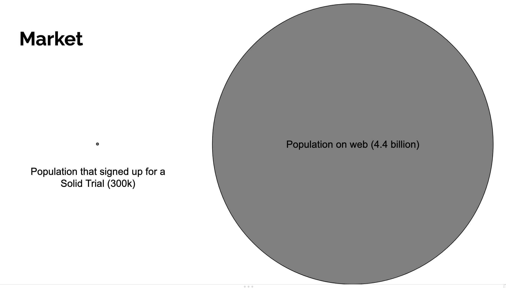

Another weekly catch-up the weekly catch up!
The waiting game continues. I'm not going to talk with Ann next week, and hopefully Tim this Wednesday, but waiting to talk is... difficult. Luckily, I have something to do in the interim :D
Joy (Xun) messaged me on Wednesday with an article about Paul Judge raising $300 million for his Atlanta based startup fund. It sparked an interest in at least exploring Atlanta tech. So I reached out to ATDC's student liason, Joy (Hymel), to see what Atlanta had to offer in terms of funding. She connected me with Brad Schweizer, ATDC's Investor Relations Manager. We arranged a time to talk on Friday.
I am so glad I met Brad. I gave a verbal pitch of the product and he loved the idea. He thought it was very timely and needed. He offered to give any advice for raising money, and it's so refreshing to have a neutral party as an advisor. Thiago's great, but he ultimately has bias as he's an investor himself.
When I asked if I should be evaluating to other investors or if that would be a betrayal to Floodgate, Brad assured me that it was standard to go to as many investors as possible. So, that's what I'm now doing. Brad set me up with instructions on building a pitch deck and executive summary and will recommend a set of investors to pitch. I finished the executive summary on Friday evening and planned to complete the pitch deck on Saturday.
IdP-wise. I went through a large number of corrections Ruben asked me to fix and fixed them. Other than testing and Client_id, I'm basically done with the IdP.
On Saturday, I completed the pitch deck. I was pretty proud of it, but I struggled with some parts, like outlining the market. That lead to the stupid slide below. hahaha
On Sunday I tried to work on Chapter 10 of Star Jump, but just spent the entire time planning out the chapter rather than writing.
In the evening, Ailin started work on Liqid Chat! I helped her set up the environment and she made her first commit, fixing a bug around links being rendered as buttons! I'm excited both to have another contributor to Liqid chat, and to have a chance to familiarize her with some of the more modern tools in software development. I think IBM has been doing her a grave disservice by forcing her to use antiquated tools like BAW.
I began this President's day with fixing another Liqid chat bug. Safari is too overzealous with the popup blocker, so people on Safari have a poor experience logging in. So, I changed the login flow to redirect the user in the same window. I created a PR for Ailin to review.
I spent most of my time working on establishing the size of the market for the Databrowser. While the Databrowser is technically making a new market, I realized it's comparable to existing markets like app stores and search engines, so those are good starting points to use as a comparison.
It turns out market statistics and forecasts are hundreds of dollars. Fortunately, most of the resources I found provide the market size this year along with a graph with hidden values. I think they do this to entice you to buy their study, but by copying the unlabeled graph and measuring the heights of each bar, I can use the same data to get a rough idea of what their predictions are without buying the study. It might not be super professional, but it gives me the statistics I need. I'll ask Brad if this is okay next we meet.
Marcus is also sending me more messages reacting the Solid spec. He says he's evaluating whether or not Solid could be successful, but the fact he's putting in his due dilligence is promising.
Finally, I shared Chapter 8 of Star Jump with Mindy. I haven't talked to Mindy all year, and it was nice to sync up again.
With everything finished on the executive summary and the pitch deck, all I need to do is wait for the meeting with Brad tomorrow. I will also, hopefully have the next meeting with Tim tomorrow, though I still haven't heard back from Olivia on whether or not he'll be ready to talk about funding. The lack of communication and waiting doesn't give me super high hopes, but that's why I'm working with Brad to explore alternatives. I'd still really want Tim to be on board, but I need to be prepared if that doesn't happen.
Today I also discovered that literally half of every day, Ailin is in meetings. I think it puts unnecessary stress on her. What are you doing IBM!? Hopefully no employee at any company I run will have to go through the same thing (unless they're managment, in which case I think more meetings makes sense)
That leaves me time to go back to IdP work. The only thing I can do at this point is write Unit tests, so that's what I'll do.